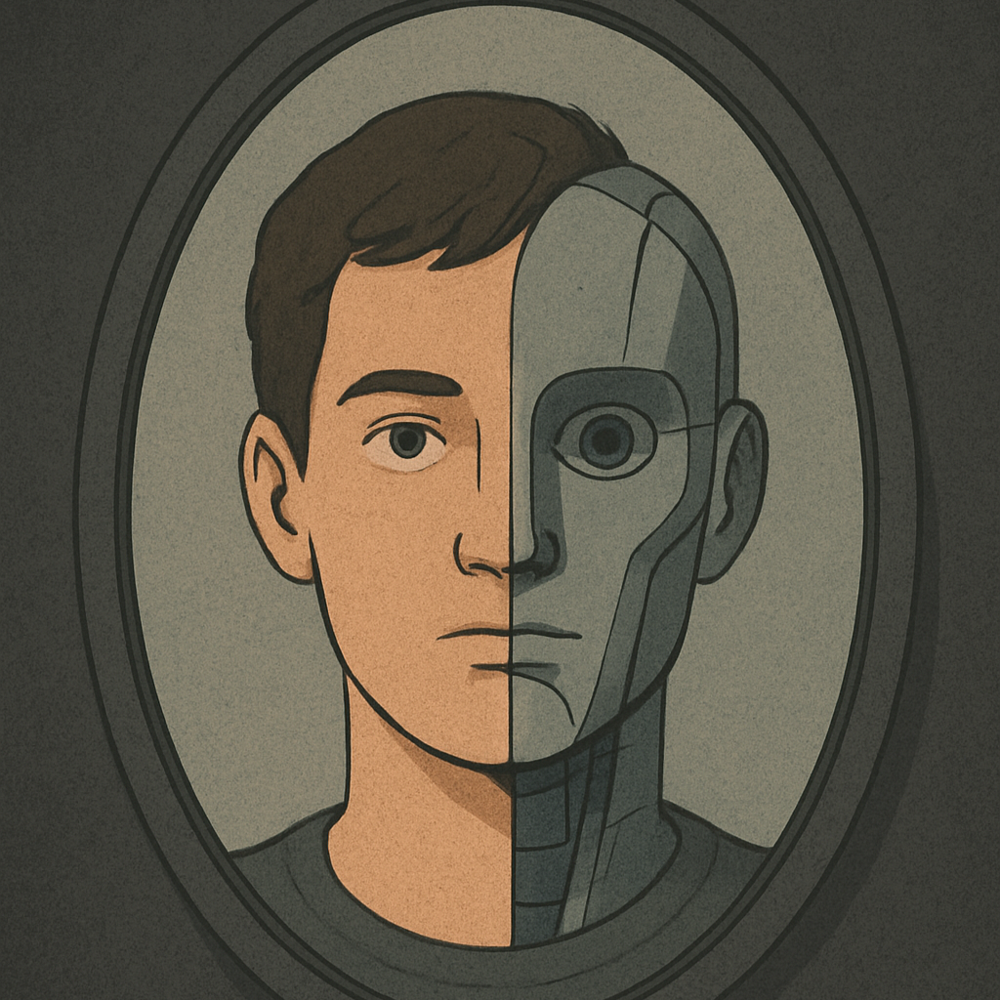

不気味の谷とは
この展示は、人間とロボットの「境界線」を見つめ直す試みです。
私たちが“似ているけれど違うもの”に感じる不気味さ――
それは、テクノロジーが人間に近づくほどに強くなる、感性と理性の狭間の現象です。
展示作品

変化する手
シリコン製の手が、人間の温かみを失い、冷たい金属の質感へと変わっていく。

不気味な鏡
自分の顔が徐々にロボットへと変化する体験型のインスタレーション。
まちん
まちん
ここ
ここ
あなたはどう感じましたか？
この「不気味の谷」を体験して、どんな感情が残りましたか？
人とロボットのあいだにある曖昧な境界線。
人間とはなにか
人工物とはどこまで「人」に近づけるか
その揺らぎは、あなたにどんな気づきをもたらしたでしょうか。